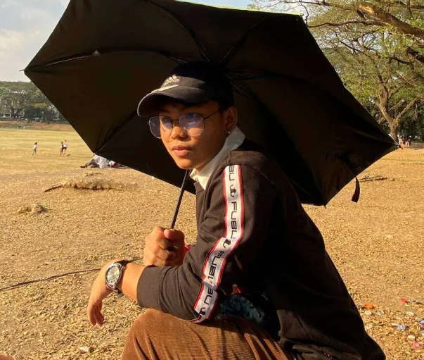
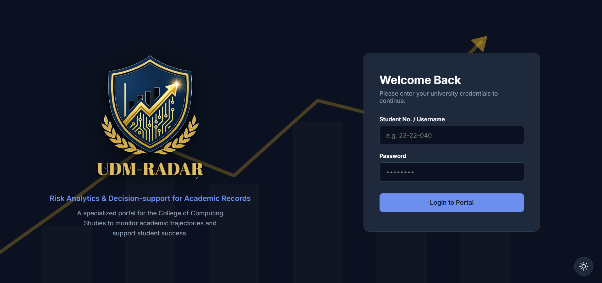
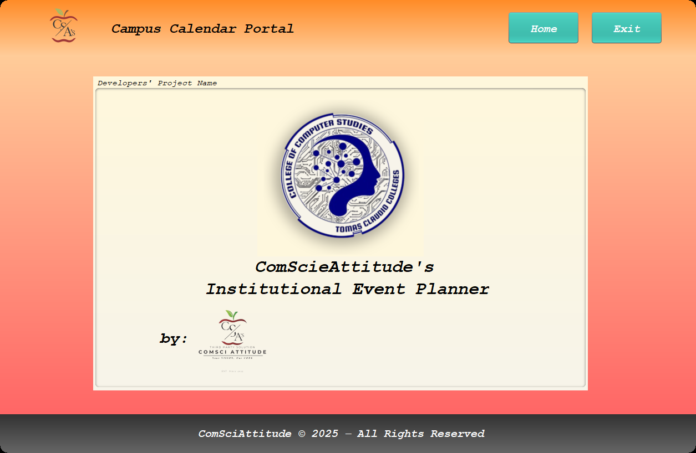
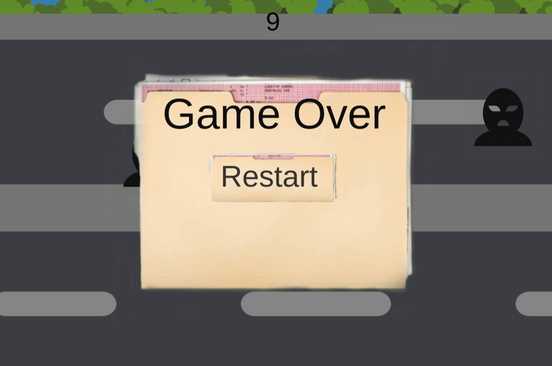
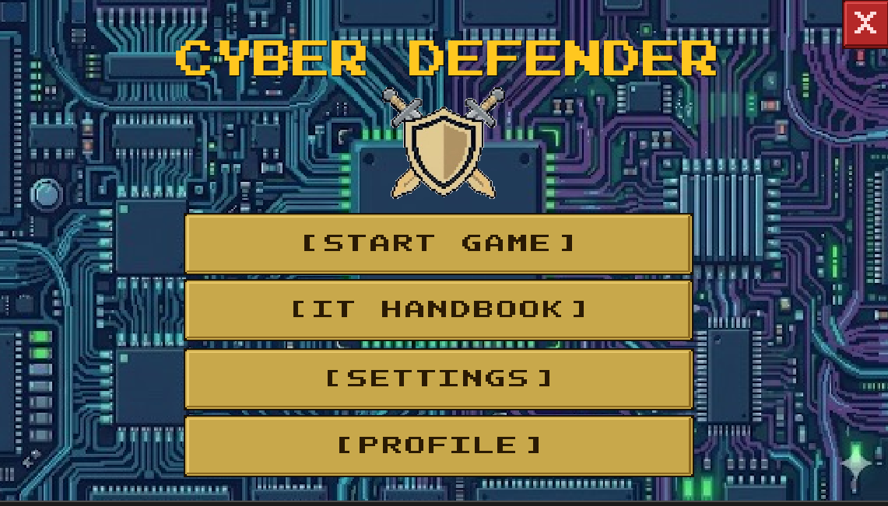

Universidad de Manila
Bachelor of Science in Information Technology
College of Computing Studies
Information Technology Student
I’m Vincent Niño E. Carandang, an IT student at Universidad de Manila seeking an internship where I can build real projects and grow into a software developer.

A little about me
I’m a detail-oriented IT student with hands-on experience across web development, software testing, game design, and technical troubleshooting.
I work with PHP, MySQL, Python, Java, and JavaScript, and have experience hosting a website on Microsoft Azure. I’ve contributed to frontend development, testing, game level design, and project documentation. Work immersion also gave me experience in graphic design and administrative support.
I enjoy collaborating, learning new tools, and turning a clear idea into something useful.
Bachelor of Science in Information Technology
College of Computing Studies
Senior High School · ICT Strand
With Academic Distinction
Experience
Assisted in creating marketing and promotional design materials using design software.
Assisted with administrative tasks, including scheduling, documentation, and coordination between departments.
Metro Manila · Project experience includes frontend development, testing, and technical documentation.
Selected work
A selection of academic, game, and software projects shaped by collaboration and hands-on problem solving.

A role-based academic decision-support platform for early risk detection, projected GWA analysis, grade governance, student-support interventions, and institutional reporting.
My contribution Built dashboard frontend components, tested and debugged workflows, and prepared flowcharts, use-case diagrams, and a data dictionary.

A user-friendly platform for planning, managing, and monitoring institutional events, with tools for scheduling, tracking, and coordinating details.
Project focus Brings event planning tasks together in one accessible workflow.

An interactive obstacle game created during Senior High School. Players dodge obstacles to practice reflexes and quick decision-making.
Published Play the browser version on itch.io.
Play the game
A cybersecurity simulation game for Android, created for a Software Development subject at Universidad de Manila’s College of Computing Studies.
My contribution Designed and built stages, level layouts with three difficulty tiers, the menu interface, and navigation flow.
View source codeSkills & tools
TESDA NC II
Computer Systems Servicing
For recruiters
Can’t see the preview? Open the resume PDF in a new tab.
Let’s connect
For professional details and updates, connect with me on LinkedIn.